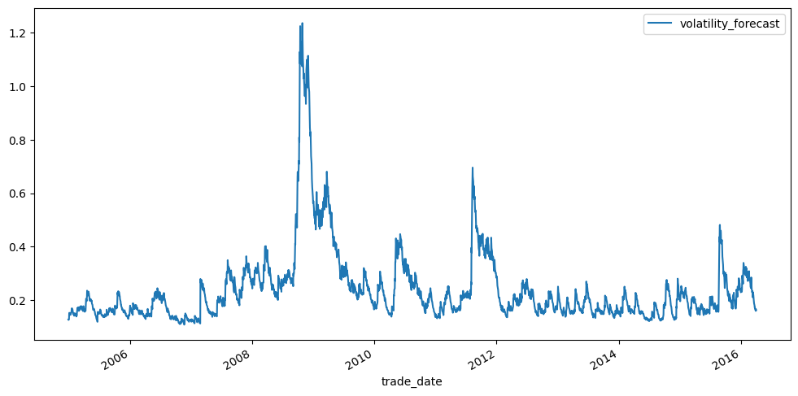

import numpy as np
import pandas as pd
from arch import arch_model
import yfinance as yf
yf.pdr_override()
from pandas_datareader import data as pdr
import sys
pd.options.display.max_rows = 1020 Volatility Forecasting: GARCH
Financial asset returns exhibit volatility clustering (also called volatility regimes), as well as mean reversion. This means that high volatility periods beget high volatility periods, low volatility periods beget low volatility periods, and that volatility doesn’t not converge to zero, or diverge to infinity. GARCH (generalized autoregressive conditional heteroskedasticity) time series models are popular for capturing these characteristics.
This chapter demonstrates code that implements a GARCH(1, 1) model using the arch package. We will view GARCH as a volatility prediction mechanism, and our interest will be on empirically determining the performance of GARCH relative to other prediction techniques (see the associated project).
In this chapter we will be focused exclusively on implementation, and thus we won’t be digging into the mathematical or statistical details of GARCH models (if you are interested, check out the references at the end). Specifically, we will generate some GARCH forecasts of SPY weekly volatility for the backtest period 1/1/2005 - 3/30/2016, and see how our results compare to Sepp 2016 (Volatility Modeling and Trading, pg 57).
20.1 Loading Packages
We begin by loading the packages and functions that we will need.
20.2 SPY Data for Backtest Period
Next, let’s read-in the data for the backtest period.
df_spy = pdr.get_data_yahoo('SPY', start = '2004-12-31', end = '2016-04-02').reset_index()
df_spy.columns = df_spy.columns.str.lower().str.replace(' ', '_')
df_spy.rename(columns = {'date':'trade_date'}, inplace = True)
df_spy.insert(0, 'ticker', 'SPY')
df_spy[*********************100%***********************] 1 of 1 completed| ticker | trade_date | open | high | low | close | adj_close | volume | |
|---|---|---|---|---|---|---|---|---|
| 0 | SPY | 2004-12-31 | 121.300003 | 121.660004 | 120.800003 | 120.870003 | 84.657822 | 28648800 |
| 1 | SPY | 2005-01-03 | 121.559998 | 121.760002 | 119.900002 | 120.300003 | 84.258591 | 55748000 |
| 2 | SPY | 2005-01-04 | 120.459999 | 120.540001 | 118.440002 | 118.830002 | 83.229019 | 69167600 |
| 3 | SPY | 2005-01-05 | 118.739998 | 119.250000 | 118.000000 | 118.010002 | 82.654678 | 65667300 |
| 4 | SPY | 2005-01-06 | 118.440002 | 119.150002 | 118.260002 | 118.610001 | 83.074913 | 47814700 |
| ... | ... | ... | ... | ... | ... | ... | ... | ... |
| 2827 | SPY | 2016-03-28 | 203.610001 | 203.860001 | 202.710007 | 203.240005 | 178.770111 | 62408200 |
| 2828 | SPY | 2016-03-29 | 202.759995 | 205.250000 | 202.399994 | 205.119995 | 180.423782 | 92922900 |
| 2829 | SPY | 2016-03-30 | 206.300003 | 206.869995 | 205.589996 | 206.020004 | 181.215408 | 86365300 |
| 2830 | SPY | 2016-03-31 | 205.910004 | 206.410004 | 205.330002 | 205.520004 | 180.775589 | 94584100 |
| 2831 | SPY | 2016-04-01 | 204.350006 | 207.139999 | 203.979996 | 206.919998 | 182.007034 | 114423500 |
2832 rows × 8 columns
We will need the daily log returns, so let’s calculate those now.
df_spy['dly_ret'] = np.log(df_spy['adj_close']).diff()
df_spy = df_spy.dropna().reset_index(drop = True)
df_spy| ticker | trade_date | open | high | low | close | adj_close | volume | dly_ret | |
|---|---|---|---|---|---|---|---|---|---|
| 0 | SPY | 2005-01-03 | 121.559998 | 121.760002 | 119.900002 | 120.300003 | 84.258591 | 55748000 | -0.004727 |
| 1 | SPY | 2005-01-04 | 120.459999 | 120.540001 | 118.440002 | 118.830002 | 83.229019 | 69167600 | -0.012294 |
| 2 | SPY | 2005-01-05 | 118.739998 | 119.250000 | 118.000000 | 118.010002 | 82.654678 | 65667300 | -0.006925 |
| 3 | SPY | 2005-01-06 | 118.440002 | 119.150002 | 118.260002 | 118.610001 | 83.074913 | 47814700 | 0.005071 |
| 4 | SPY | 2005-01-07 | 118.970001 | 119.230003 | 118.129997 | 118.440002 | 82.955826 | 55847700 | -0.001435 |
| ... | ... | ... | ... | ... | ... | ... | ... | ... | ... |
| 2826 | SPY | 2016-03-28 | 203.610001 | 203.860001 | 202.710007 | 203.240005 | 178.770111 | 62408200 | 0.000591 |
| 2827 | SPY | 2016-03-29 | 202.759995 | 205.250000 | 202.399994 | 205.119995 | 180.423782 | 92922900 | 0.009208 |
| 2828 | SPY | 2016-03-30 | 206.300003 | 206.869995 | 205.589996 | 206.020004 | 181.215408 | 86365300 | 0.004378 |
| 2829 | SPY | 2016-03-31 | 205.910004 | 206.410004 | 205.330002 | 205.520004 | 180.775589 | 94584100 | -0.002430 |
| 2830 | SPY | 2016-04-01 | 204.350006 | 207.139999 | 203.979996 | 206.919998 | 182.007034 | 114423500 | 0.006789 |
2831 rows × 9 columns
20.3 Organizing Dates
Let’s organize our backtest period into weeks (Monday - Friday), since our analysis is of weekly volatility predictions.
# adding a new columns consisting of the weekday number for each trade_date
weekday = df_spy['trade_date'].dt.weekday
# assigning a week number to each trade-date; M-F is all the same week
week_num = []
ix_week = 0
week_num.append(ix_week)
for ix in range(0, len(weekday) - 1):
prev_day = weekday.iloc[ix]
curr_day = weekday.iloc[ix + 1]
if curr_day < prev_day:
ix_week = ix_week + 1
week_num.append(ix_week)
# inserting the week-number column into df_spy
df_spy.insert(2, 'week_num', week_num)
df_spy| ticker | trade_date | week_num | open | high | low | close | adj_close | volume | dly_ret | |
|---|---|---|---|---|---|---|---|---|---|---|
| 0 | SPY | 2005-01-03 | 0 | 121.559998 | 121.760002 | 119.900002 | 120.300003 | 84.258591 | 55748000 | -0.004727 |
| 1 | SPY | 2005-01-04 | 0 | 120.459999 | 120.540001 | 118.440002 | 118.830002 | 83.229019 | 69167600 | -0.012294 |
| 2 | SPY | 2005-01-05 | 0 | 118.739998 | 119.250000 | 118.000000 | 118.010002 | 82.654678 | 65667300 | -0.006925 |
| 3 | SPY | 2005-01-06 | 0 | 118.440002 | 119.150002 | 118.260002 | 118.610001 | 83.074913 | 47814700 | 0.005071 |
| 4 | SPY | 2005-01-07 | 0 | 118.970001 | 119.230003 | 118.129997 | 118.440002 | 82.955826 | 55847700 | -0.001435 |
| ... | ... | ... | ... | ... | ... | ... | ... | ... | ... | ... |
| 2826 | SPY | 2016-03-28 | 586 | 203.610001 | 203.860001 | 202.710007 | 203.240005 | 178.770111 | 62408200 | 0.000591 |
| 2827 | SPY | 2016-03-29 | 586 | 202.759995 | 205.250000 | 202.399994 | 205.119995 | 180.423782 | 92922900 | 0.009208 |
| 2828 | SPY | 2016-03-30 | 586 | 206.300003 | 206.869995 | 205.589996 | 206.020004 | 181.215408 | 86365300 | 0.004378 |
| 2829 | SPY | 2016-03-31 | 586 | 205.910004 | 206.410004 | 205.330002 | 205.520004 | 180.775589 | 94584100 | -0.002430 |
| 2830 | SPY | 2016-04-01 | 586 | 204.350006 | 207.139999 | 203.979996 | 206.919998 | 182.007034 | 114423500 | 0.006789 |
2831 rows × 10 columns
The following code generates a DataFrame that contains the start-date and end-date for each week.
df_start_end = \
(
df_spy.groupby(['week_num'], as_index = False)[['trade_date']].agg([min, max])['trade_date']
.rename(columns = {'min':'week_start', 'max':'week_end'})
.reset_index()
.rename(columns = {'index':'week_num'})
)
df_start_end| week_num | week_start | week_end | |
|---|---|---|---|
| 0 | 0 | 2005-01-03 | 2005-01-07 |
| 1 | 1 | 2005-01-10 | 2005-01-14 |
| 2 | 2 | 2005-01-18 | 2005-01-21 |
| 3 | 3 | 2005-01-24 | 2005-01-28 |
| 4 | 4 | 2005-01-31 | 2005-02-04 |
| ... | ... | ... | ... |
| 582 | 582 | 2016-02-29 | 2016-03-04 |
| 583 | 583 | 2016-03-07 | 2016-03-11 |
| 584 | 584 | 2016-03-14 | 2016-03-18 |
| 585 | 585 | 2016-03-21 | 2016-03-24 |
| 586 | 586 | 2016-03-28 | 2016-04-01 |
587 rows × 3 columns
And finally let’s join the weekly start/end dates into df_spy.
df_spy = df_spy.merge(df_start_end)
df_spy| ticker | trade_date | week_num | open | high | low | close | adj_close | volume | dly_ret | week_start | week_end | |
|---|---|---|---|---|---|---|---|---|---|---|---|---|
| 0 | SPY | 2005-01-03 | 0 | 121.559998 | 121.760002 | 119.900002 | 120.300003 | 84.258591 | 55748000 | -0.004727 | 2005-01-03 | 2005-01-07 |
| 1 | SPY | 2005-01-04 | 0 | 120.459999 | 120.540001 | 118.440002 | 118.830002 | 83.229019 | 69167600 | -0.012294 | 2005-01-03 | 2005-01-07 |
| 2 | SPY | 2005-01-05 | 0 | 118.739998 | 119.250000 | 118.000000 | 118.010002 | 82.654678 | 65667300 | -0.006925 | 2005-01-03 | 2005-01-07 |
| 3 | SPY | 2005-01-06 | 0 | 118.440002 | 119.150002 | 118.260002 | 118.610001 | 83.074913 | 47814700 | 0.005071 | 2005-01-03 | 2005-01-07 |
| 4 | SPY | 2005-01-07 | 0 | 118.970001 | 119.230003 | 118.129997 | 118.440002 | 82.955826 | 55847700 | -0.001435 | 2005-01-03 | 2005-01-07 |
| ... | ... | ... | ... | ... | ... | ... | ... | ... | ... | ... | ... | ... |
| 2826 | SPY | 2016-03-28 | 586 | 203.610001 | 203.860001 | 202.710007 | 203.240005 | 178.770111 | 62408200 | 0.000591 | 2016-03-28 | 2016-04-01 |
| 2827 | SPY | 2016-03-29 | 586 | 202.759995 | 205.250000 | 202.399994 | 205.119995 | 180.423782 | 92922900 | 0.009208 | 2016-03-28 | 2016-04-01 |
| 2828 | SPY | 2016-03-30 | 586 | 206.300003 | 206.869995 | 205.589996 | 206.020004 | 181.215408 | 86365300 | 0.004378 | 2016-03-28 | 2016-04-01 |
| 2829 | SPY | 2016-03-31 | 586 | 205.910004 | 206.410004 | 205.330002 | 205.520004 | 180.775589 | 94584100 | -0.002430 | 2016-03-28 | 2016-04-01 |
| 2830 | SPY | 2016-04-01 | 586 | 204.350006 | 207.139999 | 203.979996 | 206.919998 | 182.007034 | 114423500 | 0.006789 | 2016-03-28 | 2016-04-01 |
2831 rows × 12 columns
20.4 Calculating Realized Volatility
This code cell calculates the realized volatility for each week. In machine learning parlance, these are the labels that we are trying to predict.
df_realized = \
(
df_spy
.groupby(['week_num', 'week_start', 'week_end'], as_index = False)[['dly_ret']].agg(lambda x: np.std(x) * np.sqrt(252))
.rename(columns = {'dly_ret':'realized_vol'})
)
df_realized = df_realized[1:]
df_realized| week_num | week_start | week_end | realized_vol | |
|---|---|---|---|---|
| 1 | 1 | 2005-01-10 | 2005-01-14 | 0.093297 |
| 2 | 2 | 2005-01-18 | 2005-01-21 | 0.126558 |
| 3 | 3 | 2005-01-24 | 2005-01-28 | 0.029752 |
| 4 | 4 | 2005-01-31 | 2005-02-04 | 0.069585 |
| 5 | 5 | 2005-02-07 | 2005-02-11 | 0.084566 |
| ... | ... | ... | ... | ... |
| 582 | 582 | 2016-02-29 | 2016-03-04 | 0.159052 |
| 583 | 583 | 2016-03-07 | 2016-03-11 | 0.137589 |
| 584 | 584 | 2016-03-14 | 2016-03-18 | 0.054367 |
| 585 | 585 | 2016-03-21 | 2016-03-24 | 0.048135 |
| 586 | 586 | 2016-03-28 | 2016-04-01 | 0.066439 |
586 rows × 4 columns
20.5 GARCH Training Data
A practical rule of thumb for fitting garch models to equity index returns is that you should use 5-10 years worth of data. In this tutorial we will use 10-years worth.
Let’s begin by grabbing all the data that we will need for fitting.
df_train = pdr.get_data_yahoo('SPY', start = '1994-12-30', end = '2016-04-02').reset_index()
df_train.columns = df_train.columns.str.lower().str.replace(' ', '_')
df_train.rename(columns = {'date':'trade_date'}, inplace = True)
df_train.insert(0, 'ticker', 'SPY')
df_train[*********************100%***********************] 1 of 1 completed| ticker | trade_date | open | high | low | close | adj_close | volume | |
|---|---|---|---|---|---|---|---|---|
| 0 | SPY | 1994-12-30 | 46.203125 | 46.250000 | 45.562500 | 45.562500 | 27.317329 | 2209500 |
| 1 | SPY | 1995-01-03 | 45.703125 | 45.843750 | 45.687500 | 45.781250 | 27.448469 | 324300 |
| 2 | SPY | 1995-01-04 | 45.984375 | 46.000000 | 45.750000 | 46.000000 | 27.579622 | 351800 |
| 3 | SPY | 1995-01-05 | 46.031250 | 46.109375 | 45.953125 | 46.000000 | 27.579622 | 89800 |
| 4 | SPY | 1995-01-06 | 46.093750 | 46.250000 | 45.906250 | 46.046875 | 27.607731 | 448400 |
| ... | ... | ... | ... | ... | ... | ... | ... | ... |
| 5346 | SPY | 2016-03-28 | 203.610001 | 203.860001 | 202.710007 | 203.240005 | 178.770142 | 62408200 |
| 5347 | SPY | 2016-03-29 | 202.759995 | 205.250000 | 202.399994 | 205.119995 | 180.423767 | 92922900 |
| 5348 | SPY | 2016-03-30 | 206.300003 | 206.869995 | 205.589996 | 206.020004 | 181.215424 | 86365300 |
| 5349 | SPY | 2016-03-31 | 205.910004 | 206.410004 | 205.330002 | 205.520004 | 180.775589 | 94584100 |
| 5350 | SPY | 2016-04-01 | 204.350006 | 207.139999 | 203.979996 | 206.919998 | 182.007050 | 114423500 |
5351 rows × 8 columns
Next we calculate the daily returns.
df_train['dly_ret'] = np.log(df_train['adj_close']).diff()
df_train.dropna(inplace = True)
df_train.reset_index(drop = True, inplace = True)
df_train| ticker | trade_date | open | high | low | close | adj_close | volume | dly_ret | |
|---|---|---|---|---|---|---|---|---|---|
| 0 | SPY | 1995-01-03 | 45.703125 | 45.843750 | 45.687500 | 45.781250 | 27.448469 | 324300 | 0.004789 |
| 1 | SPY | 1995-01-04 | 45.984375 | 46.000000 | 45.750000 | 46.000000 | 27.579622 | 351800 | 0.004767 |
| 2 | SPY | 1995-01-05 | 46.031250 | 46.109375 | 45.953125 | 46.000000 | 27.579622 | 89800 | 0.000000 |
| 3 | SPY | 1995-01-06 | 46.093750 | 46.250000 | 45.906250 | 46.046875 | 27.607731 | 448400 | 0.001019 |
| 4 | SPY | 1995-01-09 | 46.031250 | 46.093750 | 46.000000 | 46.093750 | 27.635849 | 36800 | 0.001018 |
| ... | ... | ... | ... | ... | ... | ... | ... | ... | ... |
| 5345 | SPY | 2016-03-28 | 203.610001 | 203.860001 | 202.710007 | 203.240005 | 178.770142 | 62408200 | 0.000591 |
| 5346 | SPY | 2016-03-29 | 202.759995 | 205.250000 | 202.399994 | 205.119995 | 180.423767 | 92922900 | 0.009207 |
| 5347 | SPY | 2016-03-30 | 206.300003 | 206.869995 | 205.589996 | 206.020004 | 181.215424 | 86365300 | 0.004378 |
| 5348 | SPY | 2016-03-31 | 205.910004 | 206.410004 | 205.330002 | 205.520004 | 180.775589 | 94584100 | -0.002430 |
| 5349 | SPY | 2016-04-01 | 204.350006 | 207.139999 | 203.979996 | 206.919998 | 182.007050 | 114423500 | 0.006789 |
5350 rows × 9 columns
The GARCH fitting process has better convergence if we express the returns as percents rather than decimals.
ser_returns = df_train['dly_ret'] * 100
ser_returns.index = df_train['trade_date']Next, we instantiate the model.
model = arch_model(ser_returns, vol = 'Garch', p = 1, o = 0, q = 1, dist = 'Normal')
result = model.fit(update_freq = 5)Iteration: 5, Func. Count: 37, Neg. LLF: 7624.3614767949375
Iteration: 10, Func. Count: 65, Neg. LLF: 7598.333575044246
Optimization terminated successfully (Exit mode 0)
Current function value: 7598.333533861198
Iterations: 12
Function evaluations: 75
Gradient evaluations: 12The following code loops through and performs the fitting for each day. It takes a while to run, so I’ll leave it to you to run it and examine on your own time. See the package documentation linked below for details - you will probably need to read those in order to complete the associated project.
# ix_start = df_train.query('trade_date == trade_date.min()').index[0]
# ix_end = df_train.query('trade_date == "2004-12-31"').index[0]
# forecasts = {}
# for ix in range(2518, 5349):
# sys.stdout.write('.')
# sys.stdout.flush()
# result = model.fit(first_obs = (ix - 2518), last_obs = ix, disp = 'off')
# temp = result.forecast(horizon = 5, reindex = True).variance
# fcast = temp.iloc[ix - 1]
# forecasts[fcast.name] = fcast
# print()
# df_forecast = pd.DataFrame(pd.DataFrame(forecasts).T)
# df_forecast = df_forecast.reset_index().rename(columns = {'index':'trade_date'})
# df_forecast
# # writing variance estimates to csv-file
# df_forecast.to_csv('variance_forecast.csv', index = False)The above code saves the variance estimates to a CSV file, and we will read those in now.
df_forecast = pd.read_csv('variance_forecast.csv')
df_forecast['trade_date'] = pd.to_datetime(df_forecast['trade_date'])
df_forecast| trade_date | h.1 | h.2 | h.3 | h.4 | h.5 | |
|---|---|---|---|---|---|---|
| 0 | 2004-12-30 | 0.312152 | 0.320800 | 0.329415 | 0.337999 | 0.346551 |
| 1 | 2004-12-31 | 0.303715 | 0.312426 | 0.321104 | 0.329750 | 0.338364 |
| 2 | 2005-01-03 | 0.313479 | 0.322231 | 0.330949 | 0.339635 | 0.348287 |
| 3 | 2005-01-04 | 0.433124 | 0.441654 | 0.450148 | 0.458607 | 0.467031 |
| 4 | 2005-01-05 | 0.453912 | 0.462365 | 0.470782 | 0.479165 | 0.487513 |
| ... | ... | ... | ... | ... | ... | ... |
| 2826 | 2016-03-23 | 0.578104 | 0.593060 | 0.607729 | 0.622115 | 0.636224 |
| 2827 | 2016-03-24 | 0.527753 | 0.543716 | 0.559369 | 0.574720 | 0.589773 |
| 2828 | 2016-03-28 | 0.482408 | 0.499278 | 0.515820 | 0.532041 | 0.547947 |
| 2829 | 2016-03-29 | 0.526633 | 0.542651 | 0.558358 | 0.573760 | 0.588863 |
| 2830 | 2016-03-30 | 0.496876 | 0.513525 | 0.529849 | 0.545856 | 0.561551 |
2831 rows × 6 columns
The columns of the df_forecast are the one day variance estimates for the next five days. In order to calculate a 5-day volatility forecasts we will add up these columns, divide by 100 (the variances are stated as percentages), and then take a square-root.
df_forecast['volatility_forecast'] = \
np.sqrt((df_forecast['h.1'] + df_forecast['h.2'] + df_forecast['h.3'] + df_forecast['h.4'] + df_forecast['h.5']) / 100)
df_forecast| trade_date | h.1 | h.2 | h.3 | h.4 | h.5 | volatility_forecast | |
|---|---|---|---|---|---|---|---|
| 0 | 2004-12-30 | 0.312152 | 0.320800 | 0.329415 | 0.337999 | 0.346551 | 0.128332 |
| 1 | 2004-12-31 | 0.303715 | 0.312426 | 0.321104 | 0.329750 | 0.338364 | 0.126703 |
| 2 | 2005-01-03 | 0.313479 | 0.322231 | 0.330949 | 0.339635 | 0.348287 | 0.128630 |
| 3 | 2005-01-04 | 0.433124 | 0.441654 | 0.450148 | 0.458607 | 0.467031 | 0.150019 |
| 4 | 2005-01-05 | 0.453912 | 0.462365 | 0.470782 | 0.479165 | 0.487513 | 0.153419 |
| ... | ... | ... | ... | ... | ... | ... | ... |
| 2826 | 2016-03-23 | 0.578104 | 0.593060 | 0.607729 | 0.622115 | 0.636224 | 0.174277 |
| 2827 | 2016-03-24 | 0.527753 | 0.543716 | 0.559369 | 0.574720 | 0.589773 | 0.167192 |
| 2828 | 2016-03-28 | 0.482408 | 0.499278 | 0.515820 | 0.532041 | 0.547947 | 0.160546 |
| 2829 | 2016-03-29 | 0.526633 | 0.542651 | 0.558358 | 0.573760 | 0.588863 | 0.167041 |
| 2830 | 2016-03-30 | 0.496876 | 0.513525 | 0.529849 | 0.545856 | 0.561551 | 0.162716 |
2831 rows × 7 columns
Let’s plot these forecasts to make sure that they look reasonable.
df_forecast.plot(x = 'trade_date', y = 'volatility_forecast', figsize = (12, 6));
We actually have far more forecasts than we need, because we calculated forecasts for each day. We can isolate the ones in question by using a join.
df_start_end.merge(df_forecast[['trade_date', 'volatility_forecast']], left_on = 'week_end', right_on = 'trade_date')| week_num | week_start | week_end | trade_date | volatility_forecast | |
|---|---|---|---|---|---|
| 0 | 0 | 2005-01-03 | 2005-01-07 | 2005-01-07 | 0.147481 |
| 1 | 1 | 2005-01-10 | 2005-01-14 | 2005-01-14 | 0.150795 |
| 2 | 2 | 2005-01-18 | 2005-01-21 | 2005-01-21 | 0.170141 |
| 3 | 3 | 2005-01-24 | 2005-01-28 | 2005-01-28 | 0.147867 |
| 4 | 4 | 2005-01-31 | 2005-02-04 | 2005-02-04 | 0.151963 |
| ... | ... | ... | ... | ... | ... |
| 581 | 581 | 2016-02-22 | 2016-02-26 | 2016-02-26 | 0.250594 |
| 582 | 582 | 2016-02-29 | 2016-03-04 | 2016-03-04 | 0.242543 |
| 583 | 583 | 2016-03-07 | 2016-03-11 | 2016-03-11 | 0.230967 |
| 584 | 584 | 2016-03-14 | 2016-03-18 | 2016-03-18 | 0.188825 |
| 585 | 585 | 2016-03-21 | 2016-03-24 | 2016-03-24 | 0.167192 |
586 rows × 5 columns
Let’s grab the forecasts and put them into their own variable.
volatility_forecasts = df_start_end.merge(df_forecast, left_on = 'week_end', right_on = 'trade_date')['volatility_forecast']
volatility_forecasts0 0.147481
1 0.150795
2 0.170141
3 0.147867
4 0.151963
...
581 0.250594
582 0.242543
583 0.230967
584 0.188825
585 0.167192
Name: volatility_forecast, Length: 586, dtype: float64Next, let’s use the \(R^2\) metric that Sepp uses in his studies.
np.corrcoef(volatility_forecasts, df_realized['realized_vol'])[0,1] ** 20.5612564282964889And finally, let’s calculate the bias and efficiency.
# bias
print(np.mean(volatility_forecasts - df_realized['realized_vol']))
# efficiency
print(np.std(df_realized['realized_vol']) / np.std(volatility_forecasts))0.1028763057503257
0.823305650441417820.6 References
Does Anything Beat Garch(1, 1) - Hansen and Lunde 2004
Options, Futures, and Other Derivatives 9th Edition - John Hull (Chapter 23)
Volatility Modeling and Trading - Artur Sepp 2016
https://arch.readthedocs.io/en/latest/univariate/univariate_volatility_forecasting.html